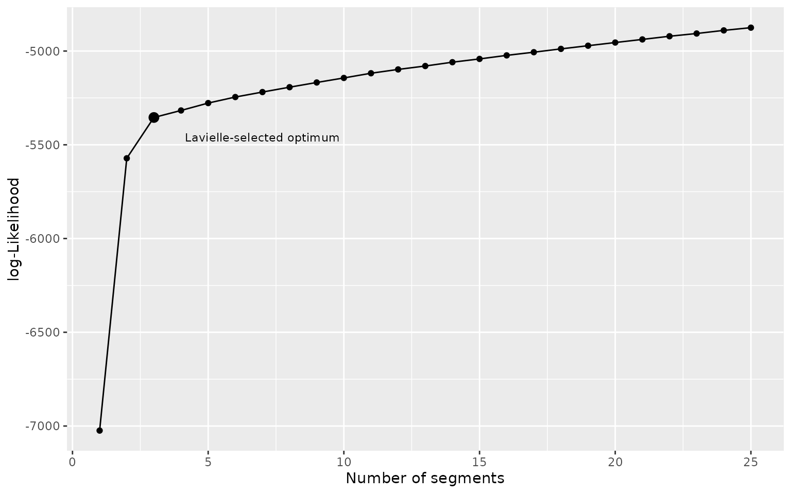

Running Segmentation/Clustering with segclust2d
R. Patin
2021-09-08
Source:vignettes/run_segclust2d.Rmd
run_segclust2d.RmdThe package provides access to two different method:
- It can perform a segmentation of the time-series into homogeneous segments. A typical case is the identification of home-range behaviour.
- It can also perform an integrated classification of those segments into clusters of homogeneous behaviour through a segmentation/clustering algorithm. This is generally used to identify behavioural modes.
Input data is here a data.frame (shown in the first examples), but it can also be a Move object, a ltraj object (from package adehabitatLT) or a sftraj object, both shown in section Preparing data for Segmentation/Clustering with segclust2d
Segmentation
Loading data set
library(segclust2d)
data(simulshift)Here we will load a test dataset: simulshift, containing a simulation of home-range behaviour with two shifts. It is a data.frame with two columns for coordinates : x and y. We can now run a simple segmentation with this dataset to find the different home-ranges.

simulshift: simulation of movement within three successive home-range. Data shown after subsampling by 100.
Setting segmentation() parameters.
Required: lmin: minimum length of a segment
To run the segmentation() function, argument lmin needs to be provided. lmin is the minimum length of a segment. It is has to be set not only to speed up the algorithm, but also, more fundamentally, to prevent over‐segmenting, based on biological considerations. For example, setting lmin to a value of a few weeks when analysing locational time series will prevent the algorithm from considering an area exploited only for a few days, corresponding to foray outside the usual home range or to stopover during migration, as a distinct home range. Similarly, setting lmin to a value long enough (depending on the species) when looking for changes of behavioural modes will force the algorithm to assign a given behavioural bout to a given mode even when it is interspersed by ephemeral events related to another behaviour (e.g. a long transit with opportunistic short feeding events on the move will be considered as a single transit phase).
Statistically, lmin cannot be <5, because of the need to estimate variances for each segment. In such case the program should throw an error message like this:
shift_seg <- segmentation(simulshift, lmin = 4,Kmax = 25, seg.var = c("x","y"), subsample_by = 60, scale.variable = FALSE)
#> Segmentation on x and y
#> Error in segmentation_internal(x, seg.var = seg.var, diag.var = diag.var, : There are repetitions of identical values
#> in the time series larger than lmin,
#> cannot estimate variance for such segment.
#> This is potentially caused by interpolation
#> of missing values or rounding of values.Note that you can get this error even if you provided lmin>5. Indeed, if subsampling is allowed (see data preparation), either automatically (subsampling = TRUE or subsample_over = 1000) or manually (subsample_by = 60), the value of lmin provided is divided by the subsampling interval and the value used by the function may then become <5:
shift_seg <- segmentation(simulshift, lmin = 240,Kmax = 25, seg.var = c("x","y"), subsample_by = 60, scale.variable = FALSE)
#> Segmentation on x and y
#> lmin = 4 and should be > 5 when sameV = FALSE
#> to avoid variance estimation instabilityTo avoid such situation, you should be carefull to provide lmin large enough so that subsampling will not cause this error. Alternatively you can also do the subsampling outside of the function to have a clearer control over lmin
Optional: Kmax: the maximum number of segments.
By default, Kmax will be set to 0.75*floor(n/lmin), with n the number of observations, so you can omit this argument. You can however provide a different value with the following advices: - Kmax should be limited to values lower than 0.75*floor(n/lmin). Larger values may produce instability. - Kmax should be large enough so that there is a clear cut in the likelihood plot (see section Optimal number of segment) - Kmax too large can considerably slow the calculations.
Running segmentation()
Segmentation is performed through a Dynamic Programming algorithm that finds the best segmentation given a number of segment. For each number of segment, the optimal segmentation is associated with a likelihood value.
By default, the algorithm choose the number of segment given a criterium developed by Marc Lavielle based on the value of the second derivative of the penalized likelihood. This criterium use a threshold value of S = 0.75, but a different threshold can be specified.
The second important method is plot_likelihood that shows the log-likelihood of the best segmentation versus the number of segments and highlights the one chosen with Lavielle’s criterium. The likelihood should show an increasing curve with a clear breakpoints for the optimal number of segment. Note that with real data breaks are often less clear than for that example. An artifactual decrease of likelihood can happen for large number of segment when Kmax is too high (close to n/lmin) and correspond generally to an oversegmentation.
plot_likelihood(shift_seg)Segmentation-Clustering
data(simulmode)
simulmode$abs_spatial_angle <- abs(simulmode$spatial_angle)
simulmode <- simulmode[!is.na(simulmode$abs_spatial_angle), ]simulmode is an example dataset containing a movement simulation with three different movement mode. It is a data.frame with 11 columns, with coordinates and several covariates. Be careful to check your dataset for missing value.
We can now run a joint segmentation/clustering on this dataset to identify the different behavioural modes. As in segmentation, you can specify the variables to be segmented using argument seg.var. The function allow rescaling of variable (recommended for segmentation/clustering to identify behavioural state), with argument scale.variable.
For a joint segmentation/clustering one has to specify arguments lmin, the minimum length of a segment and Kmax, the maximum number of segments, and ncluster a vector of number of class. By default Kmax will be set to 0.75*floor(n/lmin), with n the number of observations. Be carefull if you want to fix a higher Kmax the algorithm tend to over-segment (which you can check by looking at the segmentation or the likelihood curve)
mode_segclust <- segclust(simulmode, Kmax = 20, lmin=10, ncluster = c(2,3), seg.var = c("speed","abs_spatial_angle"), scale.variable = TRUE)
#> Segmenting - 2 class
#> Smoothing - 2 class
#> Segmenting - 3 class
#> Smoothing - 3 classOne can also inspect the BIC-based penalized log-likelihood through functions plot_BIC(). Best-case scenario is as below, the BIC show a steep increase up to a maximum and a slow decrease after the optimum and one number of cluster is clearly above the others. With real data it also happens that more cluster always improve the penalized-likelihood but so we generally advise to choose the number of cluster based on expectation and biological knowledge.
plot_BIC(mode_segclust)
Advice for choosing lmin, Kmax and ncluster
lmin is the minimum length of a segment. For home range it is the duration for which we consider a stationary use to be a home-range. For behaviour it is the minimum time for a behaviour not to be considered anecdotical.
Kmax is by default fixed to the maximum but for performance we advise on setting a smaller Kmax. If the selected number of segment is too close to Kmax, think about increasing Kmax, that might be limiting the number of segment. As noted before, when Kmax is to close to the maximum (n/lmin) the algorithm may oversegment and we advise to look carefully at the likelihood curve when using Kmax > 0.75*n/lmin
By default ncluster is chosen by maximizing a BIC-based penalized log-likelihood. When segmentation-clustering is reliable, the selected optimum should the maximum just before a linear drop of the penalized log-Likelihood. Also even though higher number of cluster may have higher penalized log-Likelihood the difference between them should not be too large. Also, as in this example, if the selected number of segment for a higher number of cluster is the same, then the lower number should be preferred. Not that this selection of number of cluster is mostly a suggestion and should not be trusted. Best practice should rely on biological information to fix a priori the number of states.